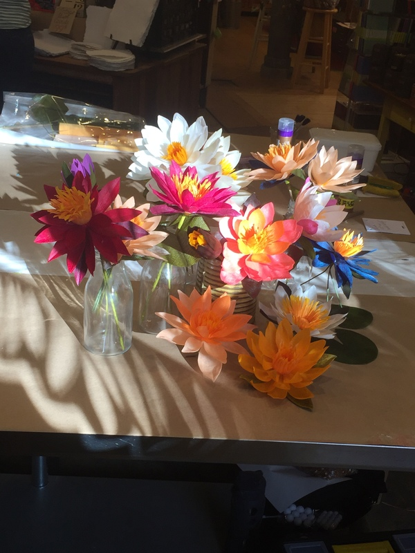
This weekend I went to the Paper Botanicals - Waxed Water Lilies class at Two Hands Paperie in Boulder. The class was run by Lynn Dolan
The process
Start with a spun cotton ball cut in half
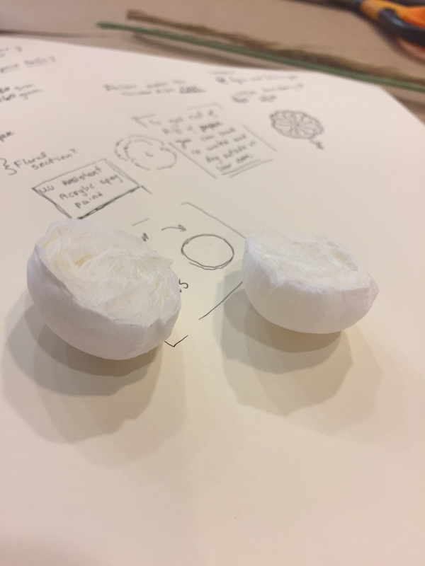
Then place your wire in the bottom of the hole, if you are using more than one wire (to make a tripod base) then connect the wires together with some crepe paper.
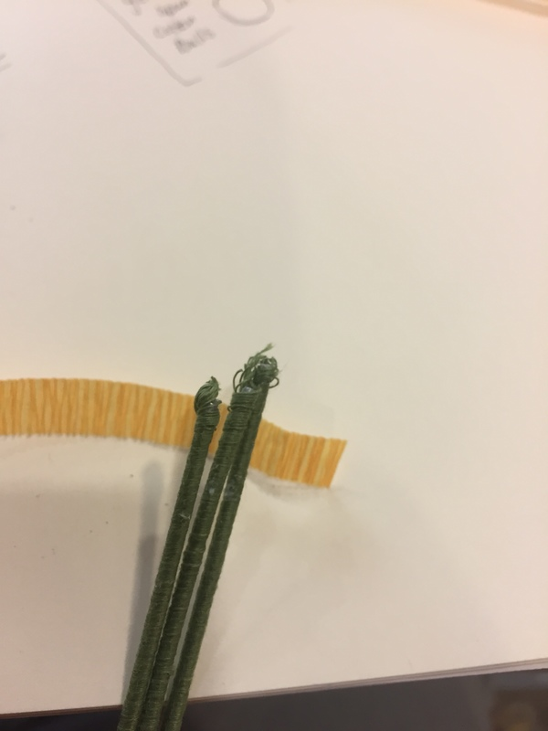
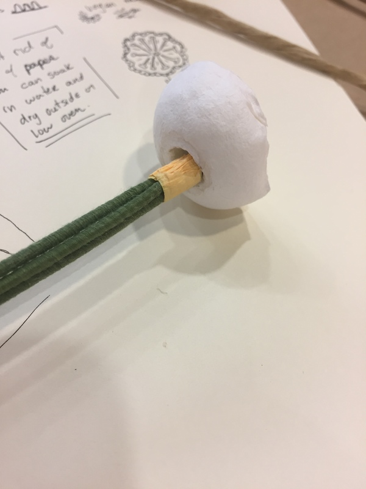
Now cut a little rectangle out of yellow crepe paper, glue it into a ring, and then flatten the ring and place it on the top of the cut ball.
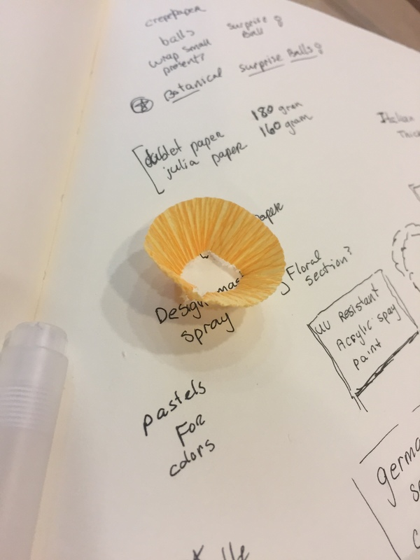
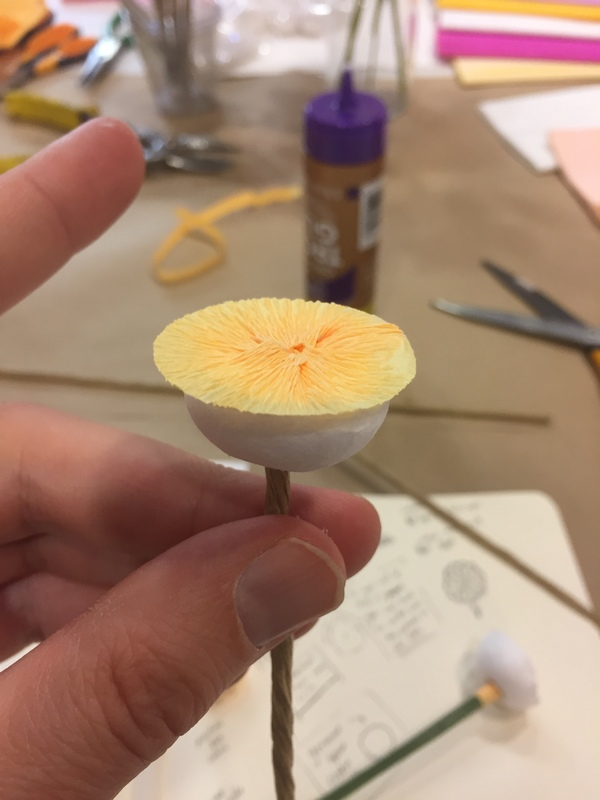
Next you cut the spiky middle part
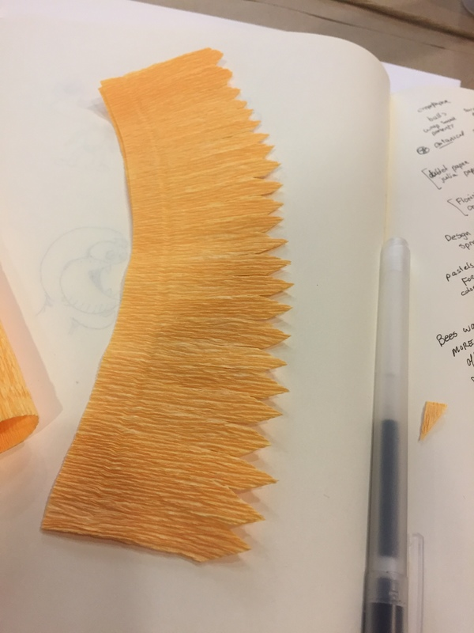
and then wrap it around the base
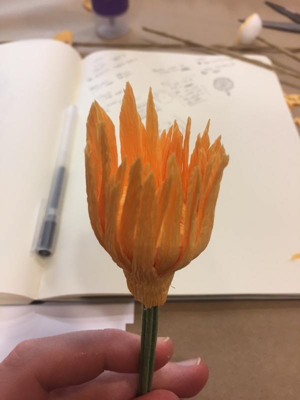
and then shape it a little to make it look more flower like
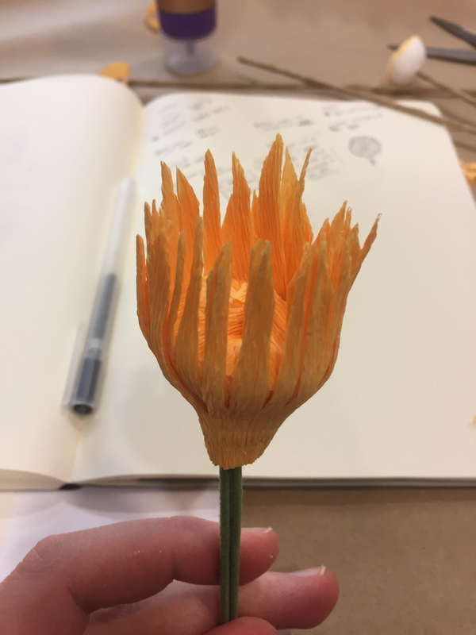
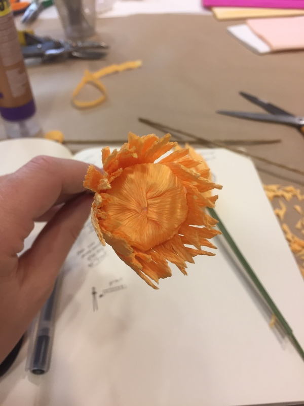
Now you start cutting all the petals out
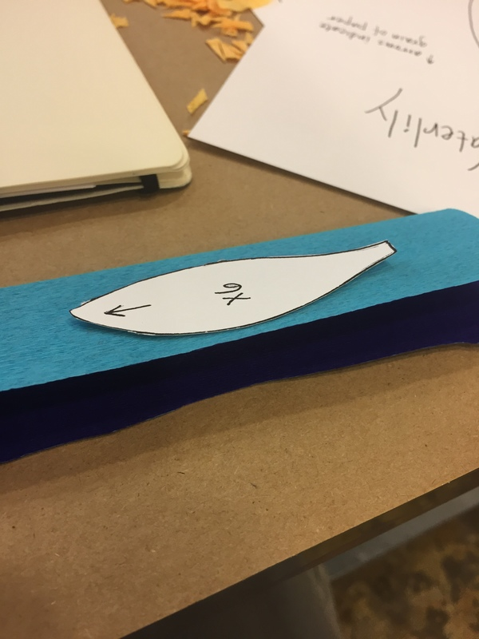
and shaping them to give them a flowery bulge
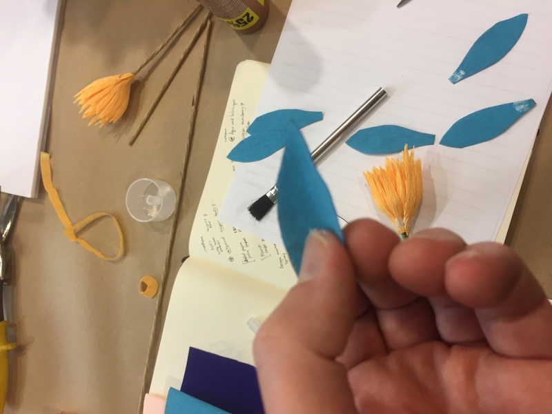
on the first run around, align the bottom square parts next to each other all the way around
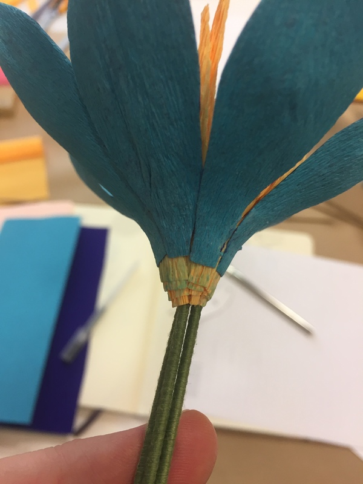

As you do the next layer, the petals go in the middle of the first layer petals
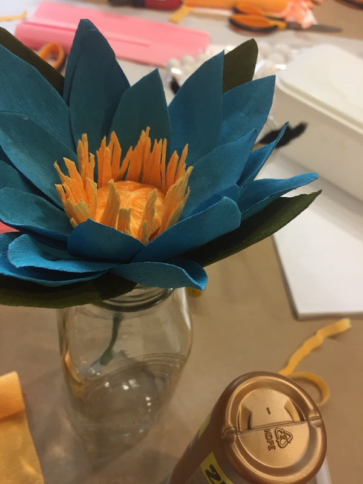
and you keep going until you get to the final layer of 4 petals which will be a different color (green/dark)
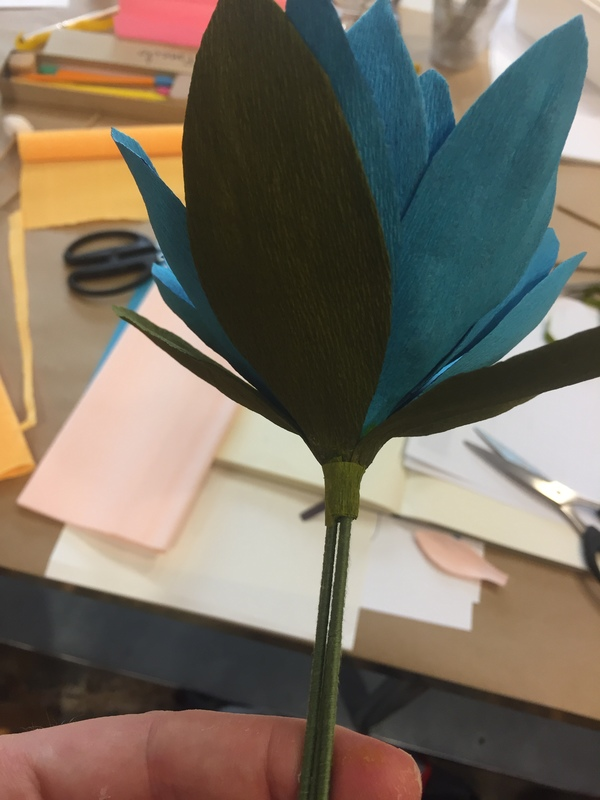
you can also come back with a strip a crepe paper and wrap it around the bottom to strengthen it up.
Next you let the glue dry, and then dip the entire thing in hot wax
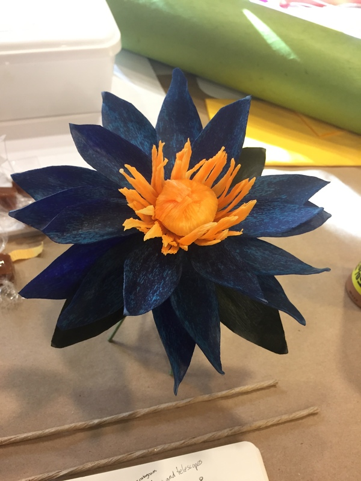
shake off the excess wax, and move the flower parts around to your liking before it dries completely.
And there you have a wax paper flower.